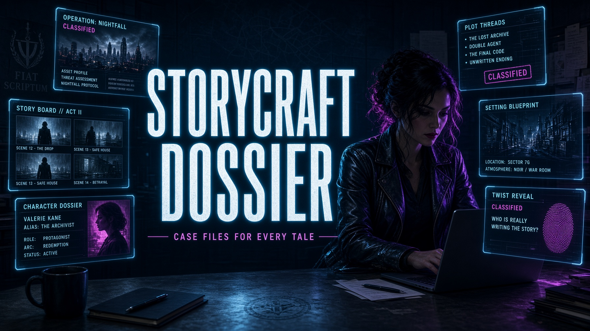

CREATOR
I set the direction before the first frame: who it is for, why it should exist, and what the format has to do. Then I take it from zero to launch — script, shoot, edit, publish — so the feed and the ads run as one system.
TX-01 GREATER BUENOS AIRES
Content maker. I plan first-person video, visual, and traffic as one system — then take it through launch and the numbers.
VIEW EXPERIENCE
SUBJ // SALANGINTX-02 HOW I CLOSE THE BRIEF
I set the direction before the first frame: who it is for, why it should exist, and what the format has to do. Then I take it from zero to launch — script, shoot, edit, publish — so the feed and the ads run as one system.
Landing pages as part of the funnel: offer, structure, form, speed. AI is a production tool — drafts, variants, faster iteration — and I still own the logic and the final cut.
Sales funnels, articles, native and contextual copy. The writing is a path: what the reader should understand, what the offer promises, and which next step the strategy actually needs.
Visual systems in Figma and Adobe — frame, banner, edit. The picture holds a point of view: it keeps attention and matches the promise in the copy and the traffic behind it.
Not clicks for their own sake. I read the audience, the hook, and why a campaign should exist — then test, scale what holds, and cut what does not. Angles only when they serve the strategy.
Social media specialist. A channel is a strategy, not a posting calendar. I set the voice, the formats, the cadence, and how organic content meets paid — then build the profile toward that.
TX-04 WHERE THIS ALREADY SHIPPED
Designed and executed end-to-end promotional campaigns for international markets, creating persuasive articles, video/photo scripts, and high-converting sales funnels.
Influencer, editor, and on-camera performer. First-person video on Meta Ray-Ban: frame, voice, cut, and publish. The series is the strategy — a point of view the channel can grow on.
Marketing assistant. Click-led creative inside a send strategy: news and product pushes, open and click metrics, competitor reads, daily reports, and a plan for scaling what already works.
Ran up to 40 accounts: mailboxes, warm-up, content, quality control, and regular reports.
Traffic manager. Daily launches with an audience plan, creative and headlines, optimization against the result, and reports — not volume for its own sake.
Campaigns on TrafficFactory, banners and GIFs built per product, stats, optimization, and reports.
TX-03 FORMATS YOU CAN SWAP FOR YOUR OWN
TX-05 PROFILE
MATVEY SALANGIN // CONTENT MAKER
Content maker. Idea, visual, and traffic as one system: first-person video, creative, funnel, launch. Music, photo, and editing trained the eye. Advertising trained the read on results.
TX-06 PERSONAL
A niche can be anything. So can a category. I go into the product, the way the brand sounds, and where the traffic actually comes from — then I build content and a funnel that can be developed and scaled.
Not a stack of posts. A system: the idea, the format, the channel, the launch, and the strategy after that. That is where I go in headfirst.